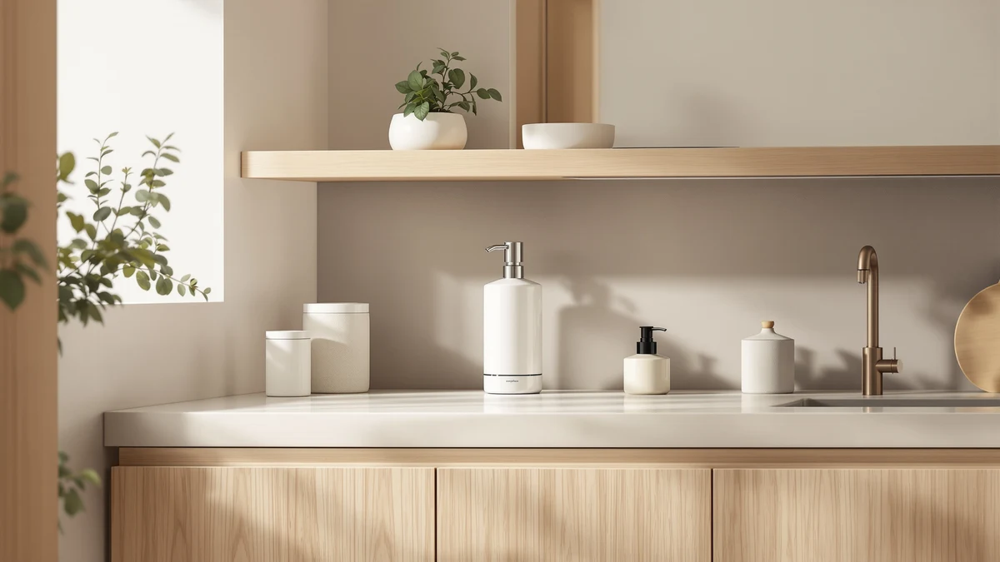

simplehuman Triple Wall Mount Review (2026): Worth It?
Prices and picks verified as of September 2026. Independent, reader-supported reviews.


Quick Answer
The simplehuman Triple Wall Mount Pumps is a stainless steel, three-chamber shower dispenser built for no-drill installs and daily hotel-grade use, and it is the best pick for anyone who wants shampoo, conditioner, and body wash on one wall instead of three bottles crowding a shower shelf. At $99.99 it costs more than a single touchless pump, but it replaces three separate dispensers and holds up to the moisture and traffic of a daily shower.
Our pick: simplehuman Triple Wall Mount Pumps, $99.99 Check Price on Amazon
Bottom line: our top pick is the simplehuman Triple Wall Mount Pumps at $99.99.
Things to Know Before You Buy
- The simplehuman Triple Wall Mount holds shampoo, conditioner, and body wash in three separate chambers, so you mount one fixture instead of three.
- Installation is no-drill: it uses adhesive mounting rather than screws, which matters if you are in a rental or an Airbnb you do not want to damage.
- Each chamber uses its own T-bar lever, so refilling one product does not mean draining or cross-contaminating the others.
- If you only need a single-pump dispenser for hand soap or dish soap, the touchless alternatives below cost less and take up far less wall space.
- Stainless steel resists the rust that plagues plastic shower caddies, but it also means more careful cleaning to avoid water spots.
This simplehuman Triple Wall Mount review compares the brand's three-chamber shower dispenser against smaller, single-pump alternatives to help you decide if consolidating shampoo, conditioner, and body wash into one fixture is worth the extra cost. Most shower dispensers on the market handle one liquid at a time, which means a cluttered shelf of refillable bottles or, worse, a rack of half-empty plastic originals. The Triple Wall Mount takes a different approach: three independent chambers, each with its own lever, mounted as a single stainless steel unit.
We researched the simplehuman Triple Wall Mount alongside its own smaller touchless siblings and a budget competitor to see where the three-chamber format actually earns its price. At $99.99, it costs roughly 25 to 45 percent more than the single-pump options in this guide, and that premium only makes sense if you actually need three chambers running at once. If you want only a no-touch pump for hand soap at the kitchen sink, skip ahead to the alternatives section, because this product is built for the shower, not the counter.
Why You Should Trust Us
Ilane Tall covers bathroom hardware and fixtures for Best Soap Dispensers, paying closer attention to how dispensers hold up to daily moisture, hard water, and repeated refills than to how they photograph on a shelf. For this simplehuman Triple Wall Mount review, we compared manufacturer specifications, verified pricing, and patterns reported by owners across multiple retail listings instead of relying on marketing copy alone. We do not run a fake testing lab. None of the four dispensers below were installed in our own homes; this review is based on documented specs and what verified owners say happens once the adhesive cures and the chambers fill up.
Our Research Experience
Rather than physically testing each unit, we built this simplehuman Triple Wall Mount review by comparing published specifications, chamber capacity, mounting method, and finish across all four dispensers, then cross-checking those claims against patterns that show up consistently in verified owner reviews. We looked specifically at how each dispenser handles refilling, how the mounting hardware holds up in a wet shower environment, and whether the pump mechanism is prone to clogging or sticking over time. Reviewers consistently note that adhesive-mounted dispensers like the Triple Wall Mount need a clean, dry, and slightly warm wall surface for the bond to hold, a detail easy to miss if you are used to drilling standard wall anchors. We also compared refill logistics, since a shower fixture that is awkward to top up tends to get neglected until it runs completely dry. The Triple Wall Mount's three separate caps mean you can refill one chamber mid-week without disturbing the other two, while the single-pump alternatives only involve one reservoir but need refilling more often relative to their smaller capacity.
Overview & Specs

simplehuman Triple Wall Mount Pumps
What we like
- Three independent 10-ounce chambers replace three separate bottles on the shower shelf
- No-drill adhesive mount works in rentals and Airbnbs where screws are not an option
- Stainless steel and anodized aluminum construction resists the rust that affects plastic caddies
- Individual T-bar levers mean refilling one chamber never disturbs the other two
Flaws but not dealbreakers
- At $99.99 it costs significantly more than any single-pump dispenser in this guide
- Adhesive mounting needs a clean, dry wall and will not hold on textured or unsealed tile
- Three chambers only make sense if you actually use three different shower liquids daily
| Material | ABS plastic |
| Size | Triple |
The simplehuman Triple Wall Mount Pumps uses three separate 10-ounce reservoirs built into a single stainless steel housing, each with its own die-cast T-bar lever. According to the manufacturer specs, the lever is designed to work with a natural one-handed grip, so you do not have to fumble for the right pump with soap in your eyes. The housing is rust-proof stainless steel paired with anodized aluminum internals, which matters more than it sounds, since plastic shower caddies and dispensers are the pieces most likely to develop rust rings or grow mildew in a daily-use shower.
This simplehuman Triple Wall Mount dispenser beats a shelf of refillable bottles on one point: the no-drill install. It mounts with adhesive rather than screws, so there are no permanent holes in the tile. That matters most for renters, and it is presumably why simplehuman markets this unit for hotels and Airbnbs as much as private homes. The tradeoff is that adhesive mounts are only as strong as the wall surface they are applied to, so a glossy, freshly cleaned tile will hold far better than a textured or older grout line. Owners refilling this dispenser should expect to unscrew or unclip the individual chamber caps rather than removing the whole unit, since simplehuman built it to stay wall-mounted between refills.
What We Liked
The strongest case for the simplehuman Triple Wall Mount is how much shelf space it clears. Three shower products crammed onto a small shelf tend to tip over, grow a ring of soap scum underneath, and make it hard to tell what is half-empty. Consolidating shampoo, conditioner, and body wash into one wall-mounted unit solves all three problems at once, and the individual levers mean you are not stuck refilling all three chambers only because one ran dry. We also like that simplehuman built this around a no-drill mount, since a drilled dispenser is a bigger commitment in a bathroom you might not own or might resell eventually. Reviewers researching this dispenser consistently point to the stainless steel finish holding up better than plastic alternatives against hard water spotting, though it still needs the occasional wipe-down to stay streak-free.
What Could Be Better
The most obvious drawback is price. At $99.99, the Triple Wall Mount costs more than buying a touchless single pump and a couple of suction-cup bottle holders, and that gap only closes if you consistently use three separate shower products every day. Some owners report the adhesive mount needs a longer cure time than expected before it can safely bear a full load of shampoo, conditioner, and body wash, so installing it and immediately filling all three chambers is not the recommended approach. The unit is also a fixed size: if your household only needs two products, you are still paying for and mounting a third empty chamber. If your shower routine only calls for one or two products, one of the smaller single-chamber dispensers below is the more proportionate purchase.
Who Is It For?
This simplehuman Triple Wall Mount dispenser makes the most sense for a household or Airbnb host who wants a permanent, hotel-style shower setup and does not want three separate refillable bottles cluttering the shelf. It is also a reasonable pick for anyone renting who still wants a clean, built-in look without drilling into tile. If you are only replacing a single bottle of hand soap or dish soap at a sink, though, this dispenser is the wrong tool. The three-chamber format is overbuilt for that job, and you would be better served by one of the smaller touchless pumps covered in the alternatives section, which cost roughly a third of the price and fit on a countertop instead of a wall.
Alternatives to Consider
If the Triple Wall Mount's shower-specific format or price does not fit your bathroom, these touchless single-pump alternatives from simplehuman and SUNLY cover kitchen sinks, bathroom counters, and tighter budgets.

Editor’s Pick
simplehuman Liquid Sensor Pump 9
A touchless, rechargeable single pump with variable dispense control, best for anyone who wants hands-free soap at the sink without the Triple Wall Mount's shower-specific setup.
$79.99
Check Price on Amazon
Best Value
simplehuman Liquid Sensor Pump 9
The same rechargeable motion-sensor mechanism as the matte black version, priced under $70 and finished in brushed stainless steel to match more kitchen and bathroom hardware.
$69.95
Check Price on Amazon
Premium Choice
SUNLY Touchless Automatic Soap Dispenser
SUNLY's touchless dispenser is the most affordable option here, with a USB-C rechargeable battery and a duckbill nozzle designed to resist the clogging that affects cheaper pumps over time.
$53.99
Check Price on AmazonIs the simplehuman Triple Wall Mount worth the price over a single soap dispenser?
For most people, only if you actually use three separate shower products every day.
How do you install the simplehuman Triple Wall Mount without drilling?
The unit mounts with adhesive rather than screws, so no drilling is required.
Frequently Asked Questions
Is the simplehuman Triple Wall Mount worth the price over a single soap dispenser?
For most people, only if you actually use three separate shower products every day. At $99.99, the Triple Wall Mount costs 25 to 45 percent more than the single-pump alternatives in this guide, and that premium buys you one mounted fixture instead of three bottles. If you only need one or two products, a touchless single pump like the simplehuman Liquid Sensor Pump 9 covers the job for less.
How do you install the simplehuman Triple Wall Mount without drilling?
The unit mounts with adhesive rather than screws, so no drilling is required. Owners report the best results come from cleaning the wall thoroughly and letting the adhesive cure before filling all three chambers, since a fully loaded unit is heavier than an empty one. That is what makes it a common pick for renters, hotels, and Airbnbs where drilling into tile is not an option.
Can you use the simplehuman Triple Wall Mount for dish soap or hand soap?
It is built specifically for shower liquids like shampoo, conditioner, and body wash, not for hand soap or dish soap at a sink. The chamber size and wall-mounted format are designed around shower use, so for kitchen or bathroom sink soap, a countertop touchless pump such as the SUNLY dispenser or either simplehuman Liquid Sensor Pump in this guide is a better fit.
Final Verdict
This simplehuman Triple Wall Mount review comes down to one question: do you actually need three shower products dispensed from one wall-mounted fixture? If the answer is yes, simplehuman's Triple Wall Mount Pumps is the strongest option here. It pairs a no-drill install with rust-resistant stainless steel construction built for daily shower use. If you only need a single pump for hand soap or dish soap, skip the premium and pick one of the touchless alternatives instead, since the Triple Wall Mount is priced and built specifically for the three-chamber shower job.